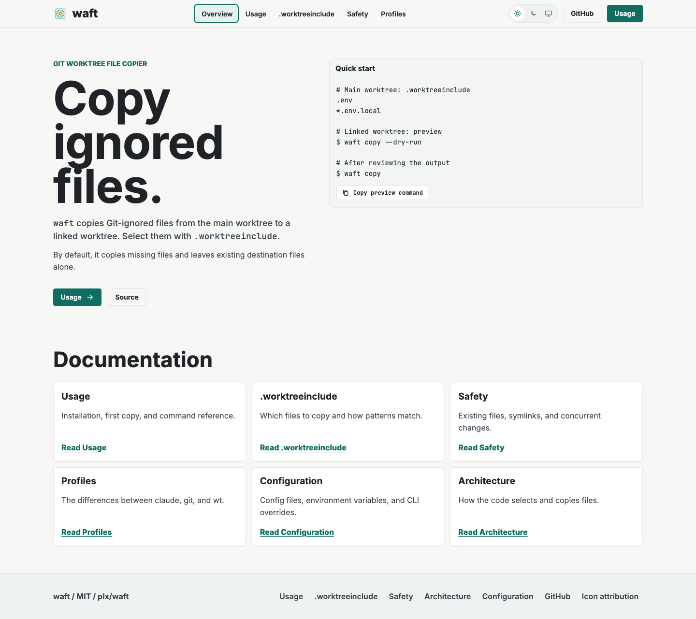
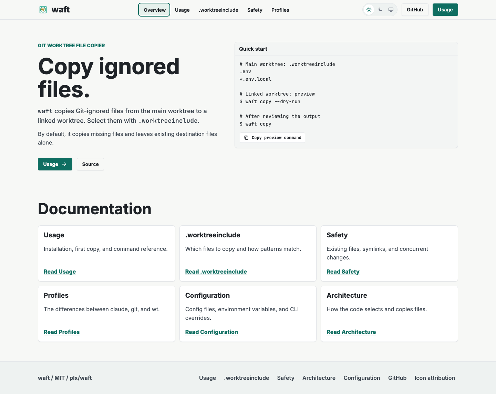

waft: aesthetic review
These are optional style changes. A is the revised site in this PR; B changes one thing. Both contain the same copy.
Inspect the exact proposed CSS. Open either image at full size to compare text and spacing.
A: current styling Full size

B: proposed styling Full size
